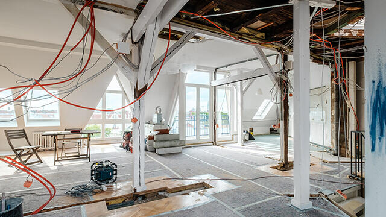

Intervention rapide à Thouaré-sur-Loire pour tous types de pannes électriques : coupures, courts-circuits, ou équipements défaillants. Nos électriciens qualifiés procèdent à un diagnostic précis et remplacent les éléments défectueux, garantissant une réparation durable et sécurisée.
LES SERVICES
Installation et mise aux normes à Thouaré-sur-Loire

Installation complète de systèmes électriques à Thouaré-sur-Loire, avec mise en conformité aux normes de sécurité et pose de tableaux électriques modernes.
Dépannage et réparation à Thouaré-sur-Loire

Interventions rapides à Thouaré-sur-Loire pour résoudre les pannes, courts-circuits et remplacer les composants défectueux en toute sécurité.
Rénovation électrique à Thouaré-sur-Loire
Rénovation complète ou partielle de vos installations à Thouaré-sur-Loire : mise aux normes, modernisation des équipements et sécurisation du réseau.
Éclairage et chauffage à Thouaré-sur-Loire

Installation et entretien de systèmes d’éclairage et de chauffage électrique à Thouaré-sur-Loire, incluant chauffage au sol et chauffe-eau performant.
Entretien préventif à Thouaré-sur-Loire

Maintenance régulière à Thouaré-sur-Loire pour prévenir les pannes et garantir la fiabilité de votre réseau électrique.
À Thouaré-sur-Loire, nous réalisons l’installation complète de vos systèmes électriques : câblage, prises, dispositifs de sécurité et tableaux modernes. Chaque prestation est conforme aux normes en vigueur pour garantir un fonctionnement fiable et sécurisé de votre réseau. Nous effectuons également des diagnostics techniques pour vérifier la conformité et les performances de vos installations électriques.
Nous assurons à Thouaré-sur-Loire la pose et la maintenance de vos systèmes d’éclairage intérieur/extérieur et de chauffage électrique. Chauffage au sol, éclairage LED ou chauffe-eau performant : nos solutions sont économiques, durables et respectueuses des normes de sécurité et d'efficacité énergétique.
À Thouaré-sur-Loire, notre service de maintenance préventive permet de garantir la longévité et la sécurité de vos installations électriques. Nos techniciens effectuent des vérifications régulières pour anticiper toute défaillance et maintenir un fonctionnement optimal de vos équipements.
Nous intervenons à Thouaré-sur-Loire pour vos travaux de rénovation électrique, qu’il s’agisse de logements anciens ou de locaux professionnels. Reprise de câblage, changement de tableaux électriques, mise aux normes NF C 15-100 : nos prestations assurent sécurité, performance et conformité à vos attentes.
NOTRE SAVOIR-FAIRE À THOUARÉ-SUR-LOIRE (44)
Chez Lassistance Electricien Thouaré-sur-Loire, notre équipe d’électriciens qualifiés et passionnés vous accompagne pour sécuriser et moderniser vos espaces. Grâce à une expertise solide et du matériel de pointe, nous garantissons des installations électriques fiables, durables et conformes aux normes. Que ce soit pour une installation complète, une mise aux normes ou un besoin de maintenance, nous répondons avec rigueur et efficacité.
TARIFS ÉLECTRICIEN À THOUARÉ-SUR-LOIRE
COMPÉTITIFS ET TRANSPARENTS
Chez Lassistance Electricien, nous proposons des prestations de qualité à des tarifs attractifs. Nos devis sont adaptés à chaque projet et prennent en compte vos besoins techniques et votre budget. Faites une demande de devis gratuit pour vos travaux d’électricité à Thouaré-sur-Loire.
DEVIS GRATUITPOURQUOI CHOISIR LASSISTANCE ELECTRICIEN À THOUARÉ-SUR-LOIRE ?
Opter pour Lassistance Electricien, c’est faire confiance à une équipe locale expérimentée, proche de ses clients à Thouaré-sur-Loire. Nos interventions sont personnalisées et réalisées dans les règles de l’art. Domotique, chauffage électrique, tableaux, rénovations : nous vous accompagnons avec écoute, précision et réactivité.
SERVICES ÉLECTRIQUES PROFESSIONNELS
Solutions personnalisées :
Nous adaptons chaque prestation à vos attentes et contraintes, pour répondre efficacement à tous vos besoins en électricité.
Qualité des équipements :
Nous travaillons exclusivement avec du matériel certifié, garantissant sécurité et longévité de vos installations.
Performance énergétique :
Nos solutions optimisent votre consommation électrique, pour un meilleur confort et des économies durables.
UNE ENTREPRISE QUI FACILITE VOS PROJETS À THOUARÉ-SUR-LOIRE
Lassistance Electricien prend en charge chaque étape de vos projets électriques à Thouaré-sur-Loire : diagnostic, réalisation, conformité et maintenance. Nous vous offrons un accompagnement sans stress et des résultats fiables. Sécurité, confort et tranquillité d’esprit sont au cœur de notre engagement.